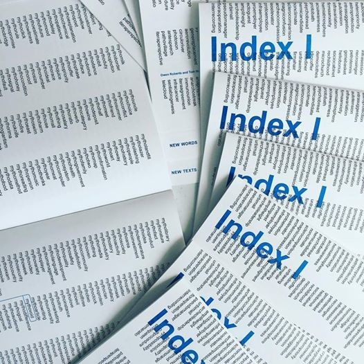

1. Index 1 generates "new words" by attaching Greek & Latin prefixes to (an approximation of) all the nouns in the English language.
We are using two sets of nouns, one is "all nouns", which consists of 55,191 words, and a smaller set of m which we are calling "some nouns", which consists of 1480 more common words.
The nouns are taken from the WordNet database.
Definitions sourced from Wiktionary.org
2. Text generator places the "new words" randomly in a range of texts of different genres and forms, using the NLTK to identify common nouns, and a Markov chain algorithm to generate new hybrid texts.
@geneword posts new words each day.



Selections from Index 1, along with a reading, were exhibited at Mathew NYC in July, 2016.